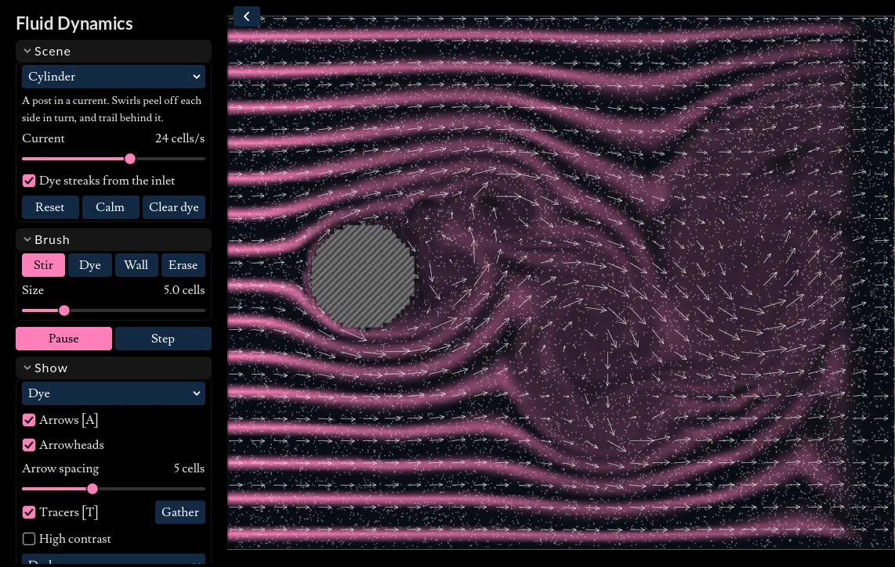

Fluid Dynamics
The interactive parts of this page require javascript to be enabled.
(There are no ADs or tracking scripts installed on this website!).

The simulation is a download of around 12 MB. It works with a mouse, a trackpad or a touch screen: drag to use the brush. On narrow screens the controls fold away behind the button at the top left.
A model of an incompressible fluid, like looking through the side of a thin tank of water. Stir it, drop dye in it, build walls in it, or turn on a current and watch it flow past obstacles. The arrows show which way, and how fast, the water is flowing, and the tracers are specks carried along by it.
This started as a spin-off from the modelling I did for my undergraduate dissertation, written in Java and based on Jos Stam's Real-Time Fluid Dynamics for Games. In 2026 it was rewritten in C++ and Godot, so it can run in the browser, with a more accurate solver, obstacles, currents, dye and a few ready-made scenes.
This project is open source and can be found on GitHub
Controls
Mouse and keyboard
Drag in the water to use the brush chosen in the Brush section. Stir pushes the water along with the drag, Dye drops dye without pushing, and Wall and Erase build and knock down walls.
| Use the brush | Drag |
| Erase walls, with any brush | Right drag |
| Stir, Dye, Wall, Erase | 1 2 3 4 |
| Smaller or bigger brush | [ and ] |
| Pause or resume | Space |
| One step, while paused | . |
| Show or hide the arrows and tracers | A and T |
| Gather the tracers in the middle | G |
| Clear the dye | C |
| Reset the scene | R |
Drawing walls
Walls are hatched, so they stand out by pattern as well as colour. Draw them while paused if you like, then press Space to see how the water copes. High contrast in the Show section switches to black, white and grey.
Download it
It also runs on its own, without a browser. Unzip the file for your system, keeping the two files in it together, then run "FluidDynamics.exe" on Windows or "FluidDynamics.x86_64" on Linux.
FluidDynamics for Windows (zip, 39 MB)
FluidDynamics for Linux (zip, 29 MB)
How it works
The Gist
Water can't be squashed, so wherever you push it, it has to make room by flowing somewhere else. The tank is divided into a grid of 150 by 120 cells, each with a velocity. Every step, the water carries itself along (each cell takes the velocity of
whatever was upstream of it), then the model works out the pressure needed to push the water back to the same density everywhere, and takes it away. What's left is a flow that never piles up or thins out anywhere, just like a real liquid.
The clip shows the Cylinder scene: a current flows past a round post, and swirls peel off each side in turn, a pattern called a von Kármán vortex street.
The same thing happens to wind blowing past chimneys, and to clouds downwind of islands.
Tracers
Tracers are like tiny beads that neither float nor sink: they only move when the water around them does. Here they were all gathered in the middle with Gather, then pushed with a single stroke of the Stir brush. The water
pushed forward has to go somewhere, so it curls back round either side, rolling the tracers up into a pair of spirals.
Each tracer also wanders a little on its own, like a molecule jostled by its neighbours, so a tight group slowly spreads out.
Dye and currents
Turn on a Current, and the left edge becomes an inlet where water flows in at a steady speed, releasing streaks of dye, like smoke in a wind tunnel. The right edge is an outlet, which calms the water down before it wraps round to the
inlet again. In Two slits, the current squeezes through two gaps as a pair of jets, which wobble, break up and mix.
Moving dye around a grid tends to blur it, a little more every step. To keep the streaks sharp, the model uses MacCormack's method: it moves the
dye forward a step, then back again, and whatever didn't survive the round trip shows how much blurring it made, so it can take that back off.
Speed
The Show section can shade the water by its speed instead of its dye: the stronger the colour, the faster. The water speeds up to squeeze round the sides of the post, and leaves a slow, swirling wake behind it.
Swirl (vorticity confinement) puts back some of the small swirls that the grid smooths away, and Thickness (viscosity) turns the water into something more like honey, which resists being stirred and soon settles.
Accuracy
Working out the pressure exactly would take far too long for every step, so the model improves its guess a set number of times instead: 16, which is plenty to look right. With only a couple of tries the water would be noticeably squashy,
and swirls would fade quickly.
The original Java version stored each cell's velocity at its centre, as Stam's paper does. That's simple, but it leaves a checkerboard pattern that the pressure can't see, and so can't remove. This version stores the flow through each cell's
edges instead (a staggered grid), which the pressure can balance exactly.
The original
The 2014 Java version: a grid of 100 by 100 cells, 20,000 tracers that all started in the middle, and a mouse to stir them with. It's still on GitHub, along with a runnable jar, in the
2D-only branch.